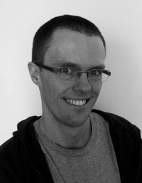

+ ME
|
e-mail: stefaniak@gmail.com
|
 |
+ EXPERIENCES
2011 – now | Chemo- & bioinformatican, Celon Pharma
Computer Aided Drug Design:
- Screening methods development and application for virtual libraries screening
hits evaluations, clustering and SAR analysis
ADMET analysis and profiling - Developement of QSAR/QSPR models
- Protein models preparation and evaluation | homology modelling | docking
- Patent documents SAR analysis
- Compounds database developement and management
- Corporate Knowledge Base developement and management
2010-2011 | Project Leader, Celon Pharma
Small molecule kinase inhibitors in cancer therapy:
- Patent analysis
- Bioactive compounds design
- Synthesis planning
- Team management
2008-2010 | Medicinal Chemist, Celon Pharma
Natural products derivatives in cancer therapy:
- Patent analysis
- Organic synthesis
- Compounds analysis and identification
+ EDUCATION
2008: PhD in Organic synthesis of bioactive compounds (Warsaw University of Technology)2002: MSc in Organic chemistry (Warsaw University of Technology)
+ LANGUAGES
- Polish – native
- English – very good (FCE, CAE)
+ PROFESSIONAL SKILLS
Drug developement
- Hit to lead:
- compound modification in affordable chemical space
- ADMET profiling
- Selectivity profiling
- SAR analysis
- Organic synthesis planning
- Patents, literature and database data analysis
- Protein-ligand interaction analysis
Computer Aided Drug Design
- Suites: Accelrys Discovery Studio, Schrödinger suite
- Ligand and protein based drug design: Autodock, ShaEP, SHAFTS, AutoGrow
- Data mining and QSAR/QSPR: KNIME, Orange McQsar
- Structures handling and mining: Open Babel
- Visualisation: PyMol, Chimera, gnuplot
- Other: MOPAC, MestRec
- Databases: ChemBlDb, BindingDB, PDB, PubChem, PubMed
Other
HTML, PHP, bash scripting, MySQL, Microsoft Office (+VBA), Libre Office, DokuWiki, LaTeXOperating systems: GNU/Linux, Microsoft Windows
+ TRAININGS AND COURSES
2012
- Lead finding - exploring various approaches; GPCR Modeling with Schrödinger suite (ICM, Warsaw)
- SYBYL-X: Introductory Course & Sybyl Programming Language (ICM, Warsaw)
2011
- Project Management training
- Computational Drug Discovery – Exploring Various Approaches for Novel Hit Identification - Schrödinger suite (ICM, Warsaw)
- Accelrys' training workshops (ICM, Warsaw)
2010
- Second EFMC Short Course on Medicinal Chemistry - Safety and Attrition, (Oegstgeest, The Netherlands)
- SYBYL-X: Modeling Proteins & Pharmacophore Model Analysis (ICM,Warsaw)
- Accelrys' training workshops (ICM, Warsaw)
{kind=link}